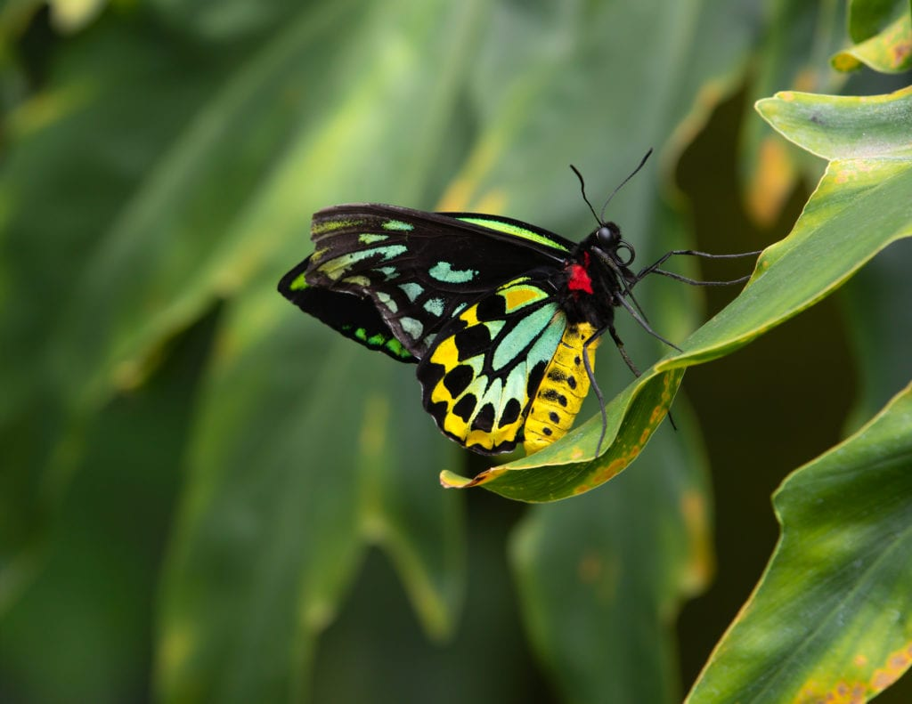
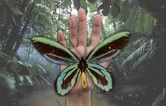
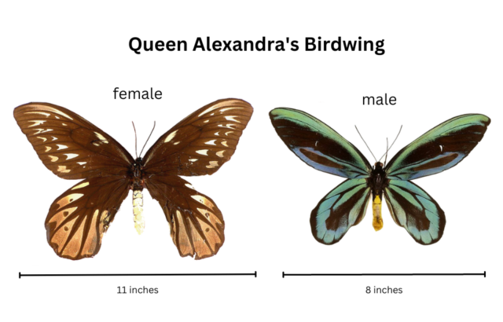
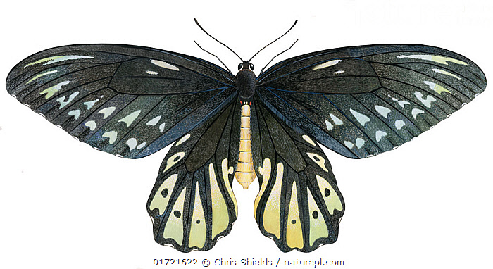
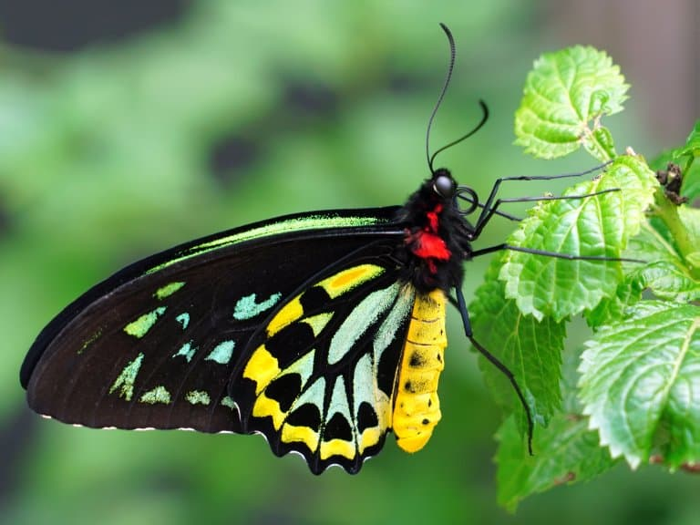
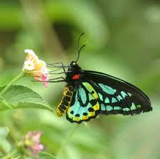

The Queen Alexandera Birdwing butterfly is the largest butterfly in the world and is very rare. Found in a small province in Papua New Guinea called Oro Province. Recently there has been ongoing Palm Tree Extraction around the area that has imposed a high risk these butterflies leading to fast rate of extinction that it is beleived that if not careful the near future will not ahve a chance to see what it looks like in person.
.



